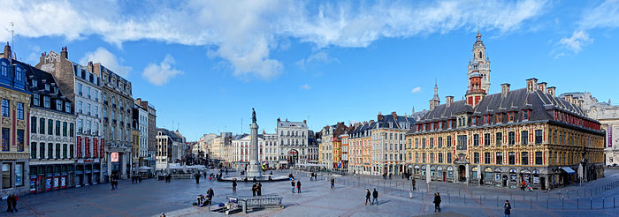
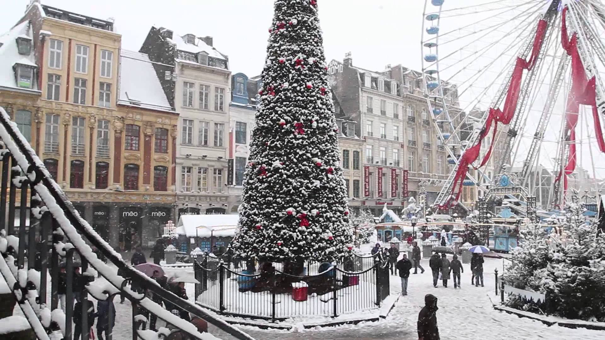

La place du Général-de-Gaulle est un espace public urbain de la commune de Lille dans le département français du Nord. La place est de type grand-place qui se caractérise par un aspect complètement minéral que l'on retrouve dans de nombreuses villes des anciens Pays-Bas. Il s'agit de la place historique et principale de la ville.Considérée jusqu'au xxie siècle comme une partie du forum cité en 1066 dans l'acte de fondation de la collégiale Saint-Pierre, la place aurait pour origine la volonté de l'échevinage de la ville d'en faire un marché, au xive siècle. La Deûle est canalisée, le sol est progressivement surélevé par des remblais, puis pavé afin de créer une place du Marché. Au xviie siècle, la construction de la bourse de commerce divise la place en Grand-Place et Petite-Place (actuelle place du Théâtre). Après la libération de Lille durant la Seconde Guerre mondiale, elle est renommée en hommage à Charles de Gaulle. La place est localement appelée « Grand'Place » ou, plus rarement, « place de la Déesse ».
La place du Général-de-Gaulle a conservé son rôle de grand-place : c'est toujours un lieu de fête et d'échanges, y compris commerciaux, et de manifestations de tous types. C'est toujours le cœur de la braderie de Lille. Le commerce des livres, avec la librairie le Furet du Nord et les nombreux bouquinistes, y est important également.
La place est bordée par divers bâtiments ; huit sont classés ou inscrits au titre des monuments historiques, parmi lesquels le Théâtre du Nord (ancienne Grande Garde) et la Vieille Bourse (ancienne bourse de commerce). Au centre de la place, trône la colonne de la Déesse. Érigée en 1845, elle représente l'héroïsme des Lillois durant le siège de Lille en 1792.

Noël illuminé à Lille
Du 17 novembre au 27 décembre, le traditionnel marché de Noël reprend ses quartiers place Rihour. La magie de Noël est là et il fait bon se promener au milieu des 90 chalets proposés pour cette 27ème édition. Ouverts chaque jour de la semaine, les chalets regorgent d’idées de cadeaux et de décorations pour faire entrer la magie de Noël dans les foyers.
N’oublions pas les différents stands de dégustations qui ne manqueront pas de vous réchauffer : tartine gratinée à l’ancienne, raclette, tartiflette à emporter ou à déguster sur place accompagnées d’un verre de vin chaud, un délice !
Chaque jour dès 16h, le marché de Noël prend des allures d’atelier du père Noël pour le plaisir et l’émerveillement des petits et grands. Cette année, le marché de Noël se pare de ses plus belles guirlandes et illuminations pour éclairer les soirées d’hiver. Le marché de Noël vous réserve quelques surprises: rendez-vous à la tombée de la nuit au cœur du marché pour savoir de quoi il s’agit !
